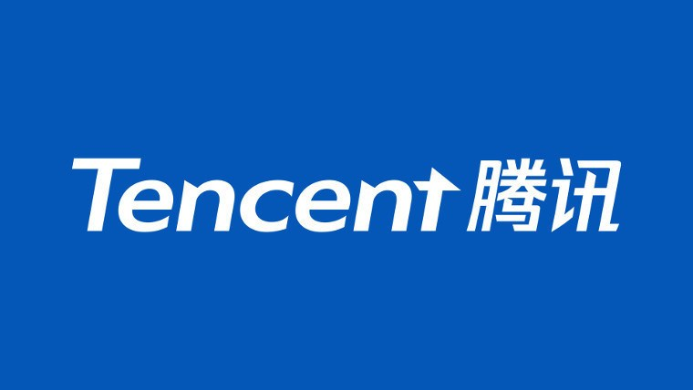
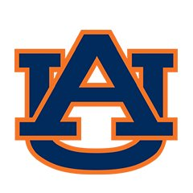
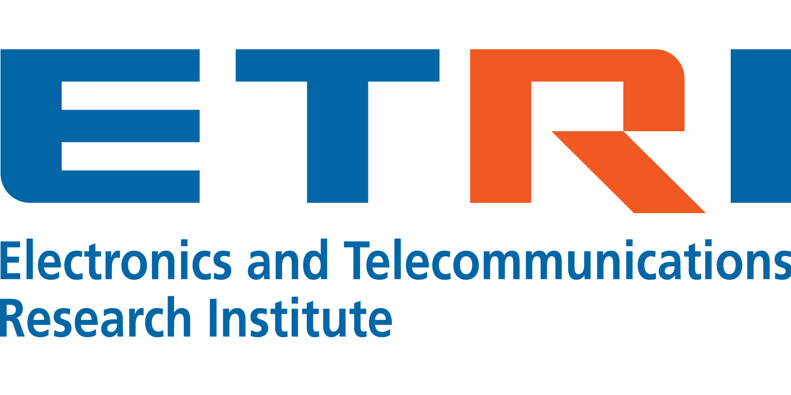
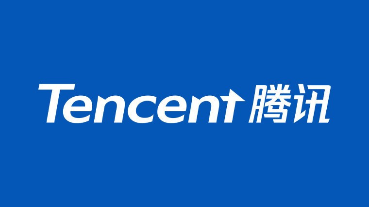
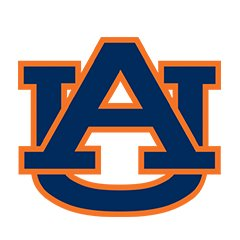
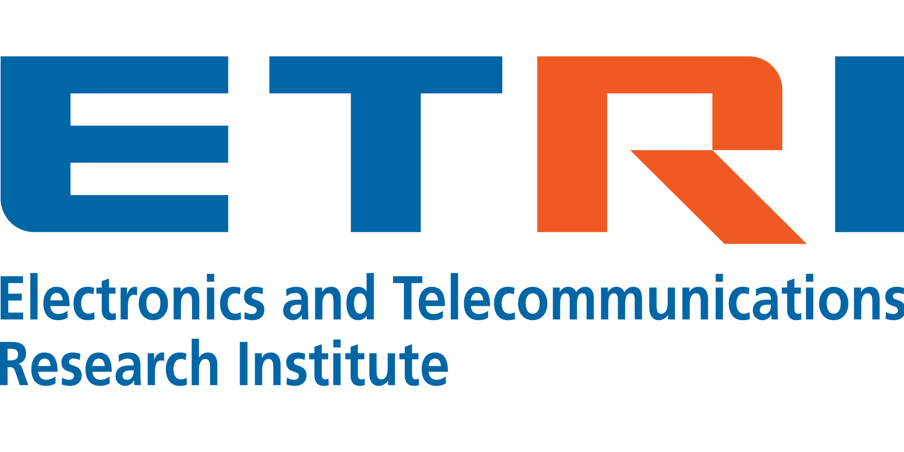

News
Jan 2022I will give a half-day tutorial at AAMAS in May together with Drs. Bo An and Yangyang Xu! Stay tuned!
[tutorial website]
Oct 2021I will give an invited talk on Trustworthy Reinforcement Learning at UMass Amherst (hosted by Dr. Tongping Liu)! My first in-person presentation in 2021!
Apr 2021I will give an invited talk on Robust and Trustworthy Machine Learning at INFORMS'2021! See you in California!
Apr 2021One journal paper accepted on Trustworthy decision-making by IEEE Transactions on Emerging Topics in Computational Intelligence (
IEEE-TETCI)! Thanks to my collaborators!
Dec 2020One
AAAI paper accepted on Mean-Variance meta-algorithm framework! Thanks to my collaborators!
Dec 2020I am elected as an IEEE senior member!
Dec 2020I am elected as an associate editor of IEEE Transactions on Neural Networks and Learning Systems (IEEE TNNLS)! Welcome to submit your awesome work!
Nov 2020I will give an invited talk at NTU via zoom!
Nov 2020I will be a Senior PC of IJCAI'2021 and UAI'2021, and PC of other conferences.
Nov 2020Welcome to our INFORMS workshop (organized by Dr. Yangyang Xu at RPI and me)
"Primal Dual Optimization and Reinforcement Learning" at INFORMS'2020!
Nov 2020I am going to give an invited online talk titled
"Legendre-Fenchel Dualities In Reinforcement Learning: Successes, Challenges & Opportunities" at INFORMS'2020!
Oct 2020I am organizing an IET Image Processing special issue on Crowd Understanding and Analysis. Welcome to submitting your awesome work!
Sep 2020I am going to give an invited online talk on Trustworthy AI in Tencent AI Lab in Seattle!
May 2020Two
ICML papers accepted! Thanks to my collaborators at U Oxford! See you virtually at ICML'2020!
Apr 2020I am going to serve as a PC of ICML "Theory of RL" workshop this year.
List of PCs. See you virtually there!
Mar 2020I am nominated by the department for the Research Award for Excellence Award (Junior faculty category, one candidate per department). Thanks to the department's support!
Jan 2020Daoming Lyu will do a summer research scientist internship in Tencent AI lab, Seattle, WA. Congratulations to Daoming!
Nov 2019Dr. Bo Liu will serve as a senior PC member of IJCAI-2020, and a PC member of other AI/ML conferences (NIPS, ICML, UAI, ICLR, AISTATS, AAAI).
Sep 2019Our paper "A Human-Centered Data-Driven Planner-Actor-Critic Architecture via Logic Programming" is accepted by
ICLP-2019! This is our 3rd publication on the topic of trustworthy and interpretable decision-making! Thanks to my collaborators!
Aug 2019We are grateful to the
NSF Award "Trustworthy Interactive Decision-making Using Symbolic Planning" (IIS-1910794, $420K) under the IIS core program! Make autonomies smart, interpretable, and risk-aware!
May 2019Our SDRL and PEORL work were highlighted in the AAAI'2019 Tutorial
"Knowledge-based
Sequential Decision-Making Under Uncertainty" by Dr. Shiqi Zhang from SUNY Binghamton!
Apr 2019Our patent "Systems and methods for neural clinical paraphrase generation" is issued! Thanks to my collaborators and Dr. Sadid Hasan for the lead!
Mar 2019I am nominated by the department for the Research Award for Excellence Award (Junior faculty category, one candidate per department). Thanks to the department's support!
Mar 2019Nirmit Patel, the first M.S student in our lab, just won the prestigious Outstanding Master Student Award. Way to go, Nirmit!
Feb 2019Dr. Bo Liu will serve as a senior PC member of IJCAI-2019, and a PC member of ICML, UAI, NIPS, ICLR, AAAI, AISTATS.
Jan 2019Our
AAMAS-2019 paper "Optimal Control of Complex Systems through Variational Inference with a Discrete Event Decision Process" is accepted! Thanks to my collaborators!
Jan 2019We are grateful to Amazon for awarding us the prestigious
Amazon Research Award (Class of 2018)! We will conduct research on using sequential decision-making to tackle fraud transaction risk management problems in e-commerce.
Sep 2018Two
AAAI-2019 paper accepted! "SDRL: Interpretable and Data-efficient
Deep Reinforcement Learning Leveraging Symbolic Planning" is our 2nd publication on the topic of trustworthy and interpretable decision-making! Thanks to my collaborators!
Sep 2018Our paper "A Block Coordinate Ascent Algorithm for Mean-Variance Optimization" is accepted by
NIPS-2018! This offers the first risk-sensitive RL method without the burden of tuning two-time-scale stepsizes, and also with provable sample complexity analysis! Thanks to my collaborators!
Aug 2018Our paper "Proximal Gradient Temporal Difference Learning: Stable Reinforcement Learning with Polynomial Sample Complexity" is accepted by Journal of Artificial Intelligence Research (
JAIR)! This paper provides a family of stable, off-policy, linear complexity per-step, and provable sample complexity reinforcement learning algorithms based on the Legendre-Fenchel duality. Thanks to my collaborators!
Jul 2018Our paper "Hierarchical Feature Selection for Random Projection" is accepted by
IEEE-TNN! Thanks to my collaborators!
Jun 2018Our paper "Stable and Efficient Policy Evaluation" is accepted by
IEEE-TNN! This paper offers an attempt when you cannot obtain long traces (consecutive trajectories) in some problems. Thanks to my collaborators! Also, congratulations to Daoming, who is the first author of the paper!
Apr 2018Our paper "PEORL: Integrating Symbolic Planning and Hierarchical Reinforcement Learning for Robust Decision-Making" is accepted by
IJCAI-2018! This paper offers a unified framework between symbolic planning and data-driven decision-making. Thanks to my collaborators!
Feb 2018Daoming Lyu will do a summer research scientist internship in Maana in Bellevue, WA. Congratulations to Daoming!
Aug 2017Our lab was awarded the prestigious
Tencent Rhino-Bird Award (Class of 2017) by Tencent AI LAB among many world-class researchers! Thanks to Tencent!
Apr 2017You are welcome to submit your wonderful ideas on machine learning, data mining with applications to cyber systems! Check the ICDM-2017 workshop
'ML in Cyber!' See you in New Orleans in the sunny November!
May 2016Our paper “Dantzig Selector with an Approximately Optimal Denoising Matrix and its Application to Reinforcement Learning” is accepted by UAI-2016! Thanks to my collaborators!
Apr 2016Our paper “Proximal Gradient Temporal Difference Learning Algorithms” is accepted by IJCAI-2016! Thanks to my collaborators!
Dec 2015Our Proximal Gradient TD work received high praise from Prof. Rich Sutton in
NIPS-2015!
"Try the new true-gradient RL methods (Gradient-TD and proximal-gradient TD) developed by Maei (2011) and Mahadevan (2015) et al. These seem to me to be the best attempts to make TD methods with the robust convergence properties of stochastic gradient descent."
Nov 2015Our paper “Uncorrelated Group LASSO” is accepted by AAAI-2016! Congratulations to my collaborators!
July 2015Our paper “Finite-Sample Analysis of Proximal Gradient TD Algorithms” won the Facebook Best Student Paper Award of UAI 2015! Thanks to my collaborators!


 




